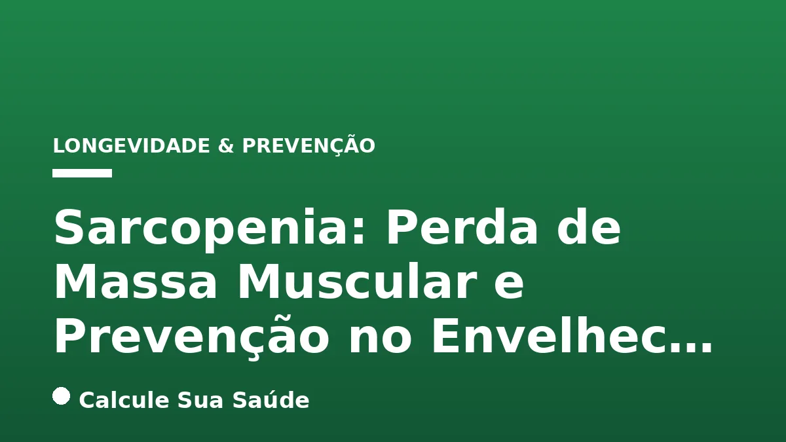

Aviso médico importante
Este conteúdo é educativo e informativo e não substitui a consulta, o diagnóstico ou o tratamento de um profissional de saúde. Em caso de sintomas, procure orientação médica.
Índice do Artigo
- 1. O Que é Sarcopenia? Definição e Reconhecimento Científico
- 2. A Fisiopatologia da Perda Muscular no Envelhecimento
- 3. Fatores de Risco e Causas da Sarcopenia
- 4. Sintomas da Sarcopenia: Sinais de Alerta
- 5. Diagnóstico da Sarcopenia: Abordagem Multidimensional
- 6. Prevenção da Sarcopenia: Estratégias Essenciais para um Envelhecimento Ativo
- 7. Tratamento da Sarcopenia: Intervenções Baseadas em Evidências
- 8. Tratamento Farmacológico: Perspectivas e Limitações
- 9. Mitos Comuns vs. O Que a Ciência Diz sobre Sarcopenia
- 10. Impactos da Sarcopenia na Qualidade de Vida e Saúde Geral
- 11. Sarcopenia no Brasil: Dados Epidemiológicos e Desafios
- 12. A Importância da Avaliação Médica e Multiprofissional
- 13. Estratégias para Manter a Massa Muscular em Diferentes Fases da Vida
- 14. Conclusão: Ação Precoce para um Envelhecimento com Força e Autonomia
- 15. Perguntas frequentes
O envelhecimento é um processo natural e complexo, acompanhado por diversas alterações fisiológicas. Entre elas, uma das mais impactantes para a qualidade de vida e autonomia é a sarcopenia, a perda progressiva e generalizada de massa muscular esquelética, força muscular e desempenho físico. Embora seja frequentemente associada à idade avançada, a sarcopenia não é uma consequência inevitável do envelhecimento, mas sim uma condição multifatorial que pode ser prevenida e gerenciada.
Reconhecida pela Organização Mundial da Saúde (OMS) como uma entidade clínica específica desde 2016, a sarcopenia representa um desafio de saúde pública global, especialmente em países com populações em rápido envelhecimento, como o Brasil. Seus impactos vão além da fraqueza física, aumentando o risco de quedas, hospitalizações, perda de independência e mortalidade. Compreender suas causas, sintomas e, principalmente, as estratégias baseadas em evidências para preveni-la e tratá-la é fundamental para promover um envelhecimento ativo e saudável.
Este artigo aprofundará na fisiopatologia da sarcopenia, detalhará seus fatores de risco, métodos diagnósticos e, crucialmente, apresentará as intervenções mais eficazes, com foco em exercício físico e nutrição, para combater essa condição e preservar a vitalidade muscular ao longo da vida. Nosso objetivo é fornecer informações claras e cientificamente embasadas para que você possa tomar as melhores decisões para sua saúde ou a de seus entes queridos.
Em resumo
- A sarcopenia é a perda progressiva de massa, força e função muscular, reconhecida como doença pela OMS.
- Pode começar aos 30 anos e acelerar após os 60, sendo multifatorial (idade, sedentarismo, nutrição, doenças crônicas).
- Sintomas incluem fraqueza, dificuldade de mobilidade, quedas e cansaço para tarefas simples.
- O diagnóstico envolve avaliação de força (dinamometria), quantidade muscular (DEXA) e desempenho físico (velocidade de caminhada).
- A prevenção e o tratamento se baseiam na combinação de treinamento de força e ingestão proteica adequada.
- Mitos sobre o exercício em idosos são desmistificados: a musculatura idosa responde positivamente ao estímulo.
1. O Que é Sarcopenia? Definição e Reconhecimento Científico
A sarcopenia, termo cunhado por Rosenberg em 1989, deriva do grego “sarx” (carne) e “penia” (perda), significando literalmente “perda de carne”. Mais do que uma simples diminuição da massa muscular, ela é definida como uma síndrome progressiva e generalizada caracterizada pela perda de massa muscular esquelética, força muscular e desempenho físico. Essa condição compromete a capacidade funcional do indivíduo, impactando diretamente sua qualidade de vida e autonomia.
A importância da sarcopenia no cenário da saúde pública foi formalmente reconhecida em 2016, quando a Organização Mundial da Saúde (OMS) a classificou como uma entidade clínica específica. Essa classificação sublinha a necessidade de diagnóstico e intervenção precoces, elevando a sarcopenia ao patamar de outras doenças crônicas que demandam atenção especializada. Embora seja predominantemente uma condição do envelhecimento, seu desenvolvimento pode ser influenciado por fatores que não são exclusivos da população idosa, como o sedentarismo e certas doenças crônicas.
É crucial entender que a perda de massa muscular pode iniciar-se de forma insidiosa a partir dos 30 anos de idade, com uma aceleração notável após os 60 anos. Essa progressão silenciosa torna a identificação precoce um desafio, muitas vezes levando ao diagnóstico apenas em estágios mais avançados, quando os sintomas já estão comprometendo significativamente as atividades diárias.
2. A Fisiopatologia da Perda Muscular no Envelhecimento
A sarcopenia é o resultado de um complexo desequilíbrio entre os processos anabólicos (construção muscular) e catabólicos (degradação muscular) que ocorre no corpo, um desequilíbrio que se intensifica com o avanço da idade. Diversos mecanismos biológicos contribuem para essa condição:
Alterações Hormonais
Com o envelhecimento, há uma redução nos níveis de hormônios anabólicos essenciais para a manutenção e o crescimento muscular. Isso inclui o Hormônio do Crescimento (GH), testosterona (especialmente em homens), estrogênio (em mulheres pós-menopausa) e o Fator de Crescimento Semelhante à Insulina 1 (IGF-1). A diminuição desses hormônios compromete a síntese proteica muscular e a renovação das fibras, favorecendo a atrofia.
Mudanças na Composição Muscular
Ocorre uma diminuição na quantidade e no tamanho das fibras musculares, particularmente as fibras do tipo IIa (fibras de contração rápida), que são cruciais para a força e a potência. Além disso, há uma infiltração de gordura no tecido muscular, um fenômeno conhecido como mioesteatose. Essa gordura intramuscular não apenas reduz a proporção de tecido contrátil, mas também compromete a função contrátil e o metabolismo local, contribuindo para a fraqueza e a disfunção muscular. A mioesteatose é frequentemente associada à gordura visceral e resistência à insulina.
Inflamação Crônica e Estresse Oxidativo
O envelhecimento é acompanhado por um estado de inflamação crônica de baixo grau, conhecido como “inflammaging”. Citocinas pró-inflamatórias, como TNF-alfa e IL-6, ativam vias de degradação proteica e inibem a síntese de proteínas musculares. O estresse oxidativo, resultante do acúmulo de radicais livres, também danifica as células musculares e mitocôndrias, prejudicando a produção de energia e a função muscular. Para mais informações sobre o papel da inflamação, consulte artigos sobre colesterol e triglicerídeos, que podem estar relacionados a processos inflamatórios.
3. Fatores de Risco e Causas da Sarcopenia
A sarcopenia é uma condição multifatorial, o que significa que diversos elementos interagem para seu desenvolvimento. Além do envelhecimento natural, que é o principal fator, outros contribuem significativamente:
Inatividade Física e Sedentarismo
A diminuição da atividade física é um dos fatores mais críticos. O músculo é um tecido que responde a estímulos: sem uso, ele atrofia. O repouso prolongado, a imobilidade devido a doenças ou lesões, e um estilo de vida sedentário aceleram drasticamente a perda de massa e força muscular. A falta de exercício regular impede a sinalização anabólica necessária para a manutenção muscular.
Nutrição Inadequada
Uma dieta deficiente, especialmente com baixa ingestão proteica, é um potente catalisador da sarcopenia. Idosos e pacientes com doenças crônicas frequentemente consomem menos proteínas do que o necessário para manter a massa muscular, levando a um estado catabólico persistente. Deficiências de micronutrientes, como vitamina D e cálcio, também são relevantes, pois afetam a saúde óssea e muscular. Uma dieta mediterrânea, rica em nutrientes, pode ser uma boa estratégia preventiva.
Doenças Crônicas
Diversas condições de saúde crônicas exacerbam a sarcopenia. Doenças inflamatórias crônicas como artrite reumatoide (ver artrose), Doença Pulmonar Obstrutiva Crônica (DPOC), câncer, insuficiência cardíaca, diabetes mellitus e HIV ativam vias inflamatórias que promovem a degradação proteica e a perda de massa muscular. A resistência à insulina, comum em condições como diabetes tipo 2 e obesidade sarcopênica, também contribui para o acúmulo de gordura visceral e está inversamente associada à massa muscular esquelética.
Uso de Medicamentos
O uso prolongado de certos medicamentos, como corticosteroides, pode ter efeitos catabólicos sobre o músculo, agravando o processo de perda muscular.
4. Sintomas da Sarcopenia: Sinais de Alerta
A sarcopenia pode progredir de forma silenciosa por anos, tornando-se perceptível apenas quando já compromete atividades básicas do dia a dia. Reconhecer os sinais e sintomas precocemente é crucial para buscar intervenção médica. Os mais comuns incluem:
- Fraqueza nos braços e pernas: Uma sensação geral de perda de força, dificultando tarefas como carregar sacolas ou levantar objetos.
- Dificuldade para levantar da cadeira ou subir escadas: Indicativo de fraqueza nos músculos das coxas e glúteos.
- Caminhar mais devagar: A velocidade da marcha é um importante indicador de desempenho físico e pode diminuir progressivamente.
- Perda de equilíbrio ou quedas frequentes: A redução da força muscular e da coordenação motora aumenta o risco de acidentes.
- Cansaço para tarefas simples: Atividades que antes eram fáceis, como caminhar curtas distâncias ou realizar afazeres domésticos, tornam-se exaustivas.
- Perda de peso não intencional: Principalmente de massa magra, mesmo que o peso corporal total não mude drasticamente devido ao acúmulo de gordura.
- Diminuição do volume muscular: Observável pela redução da circunferência de membros, como a panturrilha.
- Piora da coordenação motora: Dificuldade em realizar movimentos precisos e controlados.
É importante ressaltar que esses sintomas podem ser atribuídos a outras condições. Portanto, a avaliação médica é indispensável para um diagnóstico correto.
5. Diagnóstico da Sarcopenia: Abordagem Multidimensional
O diagnóstico da sarcopenia é complexo e deve ser realizado por um profissional de saúde, como um clínico geral ou geriatra, utilizando uma abordagem multidimensional. As diretrizes do European Working Group on Sarcopenia in Older People 2 (EWGSOP2) são amplamente aceitas e recomendam um algoritmo que inclui quatro etapas: “encontrar, avaliar, confirmar e estabelecer a gravidade”.
O processo diagnóstico foca em três parâmetros principais:
- Força Muscular:
- Teste de preensão manual (dinamometria): Utiliza um dinamômetro para medir a força de aperto da mão, um bom indicador da força muscular global.
- Teste de levantar e sentar da cadeira (sit-to-stand test): Avalia a força e a potência dos músculos das pernas, medindo o tempo que o indivíduo leva para se levantar e sentar de uma cadeira várias vezes.
- Quantidade/Qualidade Muscular:
- Absorciometria por dupla emissão de raios-X (DEXA): Considerada o padrão ouro, quantifica a massa magra apendicular (membros) e permite calcular o Índice de Massa Muscular Apendicular (ASMI), ajustando pela altura.
- Bioimpedância elétrica (BIA): Método mais acessível para estimar a composição corporal, incluindo a massa muscular.
- Tomografia computadorizada (TC) e ressonância magnética (RM): Oferecem imagens detalhadas da musculatura, mas são menos utilizadas rotineiramente devido ao custo e à exposição à radiação (TC).
- Circunferência da panturrilha: Um indicador simples e prático. Valores abaixo de 34 cm para homens e 33 cm para mulheres podem sugerir risco de sarcopenia.
- Desempenho Físico:
- Teste de velocidade de caminhada: Mede o tempo para percorrer uma distância curta (ex: 4 metros). Uma velocidade abaixo de 0,8 m/s é um indicador de baixo desempenho.
- Short Physical Performance Battery (SPPB): Uma bateria de testes que avalia equilíbrio, velocidade de caminhada e a capacidade de levantar e sentar da cadeira, fornecendo uma pontuação global do desempenho físico.
O EWGSOP2 sugere que o diagnóstico comece com a identificação de baixa força muscular (provável sarcopenia), que é então confirmada com baixa quantidade/qualidade muscular. A sarcopenia é considerada grave se, além desses dois critérios, houver também baixo desempenho físico.
6. Prevenção da Sarcopenia: Estratégias Essenciais para um Envelhecimento Ativo
A prevenção da sarcopenia deve começar muito antes da terceira idade, idealmente na vida adulta, e é um pilar fundamental para um envelhecimento saudável e autônomo. As estratégias mais eficazes combinam exercício físico regular e nutrição adequada.
Exercício Físico: O Pilar da Prevenção
A prática regular de atividade física é, sem dúvida, a intervenção mais poderosa contra a sarcopenia. O foco principal deve ser o treinamento de força (resistido), que comprovadamente estimula o crescimento e a manutenção da massa muscular, além de melhorar a força e a potência. Isso inclui levantamento de pesos, uso de máquinas de musculação, faixas de resistência ou exercícios com o próprio peso corporal.
Além do treinamento de força, outras modalidades de exercício são importantes:
- Exercícios aeróbicos: Contribuem para a saúde cardiovascular e a resistência geral.
- Exercícios de flexibilidade: Melhoram a amplitude de movimento e reduzem o risco de lesões.
- Exercícios de equilíbrio: Essenciais para prevenir quedas, um risco aumentado pela sarcopenia.
A recomendação é que a atividade física seja adaptada à capacidade individual, com progressão gradual e acompanhamento profissional, especialmente para idosos ou pessoas com condições de saúde preexistentes. Para entender mais sobre diferentes tipos de exercício, você pode consultar nosso artigo sobre HIIT vs. Aeróbico.
Nutrição Adequada: Combustível para os Músculos
Uma dieta rica em proteínas de alta qualidade é essencial para a prevenção da sarcopenia. A proteína fornece os aminoácidos necessários para a síntese proteica muscular. Alimentos como carnes magras, peixes, ovos, laticínios (leite, iogurte, queijo), leguminosas (feijão, lentilha, grão de bico) e oleaginosas devem ser incorporados à dieta diária.
Além da proteína, outros nutrientes desempenham papéis importantes:
- Vitamina D: Crucial para a função muscular e a saúde óssea. A exposição solar adequada e alimentos fortificados são fontes importantes.
- Cálcio: Essencial para a contração muscular e a densidade óssea.
- Ômega-3: Possui propriedades anti-inflamatórias que podem mitigar o estado inflamatório crônico associado à sarcopenia.
A distribuição da ingestão proteica ao longo do dia também é relevante, visando a otimização da síntese proteica muscular. É recomendado consumir cerca de 25 a 40 gramas de proteína de alta qualidade em cada uma das três principais refeições.
7. Tratamento da Sarcopenia: Intervenções Baseadas em Evidências
Embora a sarcopenia não tenha uma “cura” no sentido de reversão completa do processo de envelhecimento, o tratamento pode controlar os sintomas, retardar sua evolução e melhorar significativamente a qualidade de vida. As estratégias de tratamento são as mesmas da prevenção, mas com uma intensidade e foco adaptados à condição do indivíduo.
Exercício Físico: O Pilar do Tratamento
O treinamento de força continua sendo a intervenção mais promissora e eficaz, tanto na prevenção quanto no tratamento da sarcopenia. Ele deve ser adaptado às necessidades individuais do idoso, considerando a gravidade da sarcopenia, comorbidades e limitações físicas. Um programa de exercícios supervisionado por um profissional de educação física ou fisioterapeuta é fundamental para garantir a segurança e a eficácia.
A progressão da carga e da intensidade deve ser gradual, visando o aumento da força e da massa muscular. Mesmo em idades avançadas, o músculo responde ao estímulo do exercício, demonstrando capacidade de hipertrofia e ganho de força. A combinação com exercícios aeróbicos, de equilíbrio e flexibilidade complementa o programa, visando a funcionalidade global e a prevenção de quedas.
Intervenção Nutricional: Suporte Essencial
Uma dieta com ingestão proteica adequada é crucial para o tratamento da sarcopenia. A recomendação geral para idosos com sarcopenia ou em risco é de uma ingestão proteica ligeiramente maior do que para adultos jovens, visando otimizar a síntese proteica muscular. Como mencionado, a distribuição da proteína ao longo do dia é importante para maximizar o efeito anabólico.
Em casos de ingestão calórica insuficiente (abaixo de 70% das necessidades diárias) ou em idosos com desnutrição ou risco de desnutrição, a suplementação nutricional pode ser indicada. Os suplementos mais estudados e com alguma evidência incluem:
- Proteína: Suplementos de proteína (como whey protein) podem ajudar a atingir as metas diárias, especialmente para aqueles com dificuldade em consumir proteínas suficientes através da alimentação.
- Vitamina D: A suplementação é importante para idosos com deficiência, pois a vitamina D desempenha um papel na função muscular.
- Cálcio: Em conjunto com a vitamina D, é vital para a saúde óssea e muscular.
- Creatina: Embora as evidências sejam mais fortes para atletas, a creatina pode ter um papel coadjuvante no aumento da força e massa muscular em idosos, especialmente quando combinada com treinamento de força. Para mais detalhes, veja nosso artigo sobre Creatina: Segurança, Dose e Benefícios.
A decisão de suplementar deve ser sempre individualizada e orientada por um médico ou nutricionista.
8. Tratamento Farmacológico: Perspectivas e Limitações
Atualmente, as evidências científicas são insuficientes para recomendar o uso de medicamentos como tratamento de primeira linha para a sarcopenia. A pesquisa nessa área é contínua, mas ainda não há um fármaco aprovado especificamente para essa condição que demonstre benefícios consistentes e seguros em larga escala.
A reposição hormonal, como testosterona, hormônio do crescimento (GH), DHEA (deidroepiandrosterona) e estrogênio, tem sido estudada. No entanto, os resultados são controversos, e as evidências são insuficientes para uma recomendação generalizada. Além disso, a reposição hormonal pode apresentar riscos e efeitos colaterais significativos, devendo ser considerada apenas em casos muito específicos e sob estrito acompanhamento médico, avaliando-se cuidadosamente o risco-benefício.
Em estágios muito avançados da sarcopenia, e em situações clínicas específicas, o uso de anabolizantes pode ser considerado, mas sempre sob estrito acompanhamento e prescrição médica, devido aos potenciais efeitos adversos graves. É fundamental reiterar que a base do tratamento e prevenção da sarcopenia permanece sendo a combinação de exercício físico e nutrição adequada, com intervenções farmacológicas sendo apenas coadjuvantes e em situações muito selecionadas.
9. Mitos Comuns vs. O Que a Ciência Diz sobre Sarcopenia
A sarcopenia e o envelhecimento muscular são temas cercados por mitos que podem impedir a adoção de práticas saudáveis. É fundamental desmistificar essas crenças para promover um envelhecimento ativo e com qualidade.
| Mito Comum | O Que a Ciência Diz |
|---|---|
| Idosos não precisam ou não devem fazer exercício de força. | O treinamento de resistência (força) é um dos pilares mais importantes para combater a sarcopenia. Músculos idosos respondem ao estímulo do exercício de força, melhorando força, mobilidade e saúde geral. É seguro e altamente recomendado, com adaptações necessárias. |
| Basta comer proteína para ganhar músculo. | A proteína é essencial, mas não age sozinha. É preciso combiná-la com calorias suficientes (sem excesso), outros nutrientes e, fundamentalmente, o estímulo do exercício de força. A distribuição da ingestão proteica ao longo do dia também é crucial para otimizar a síntese proteica muscular. |
| Sarcopenia é uma condição exclusiva de idosos. | Embora mais comum em idosos, a sarcopenia pode afetar indivíduos mais jovens. Estilos de vida sedentários, má alimentação, doenças crônicas (como câncer, insuficiência cardíaca, diabetes tipo 2) e o uso de certos medicamentos podem precipitar a perda muscular em qualquer idade. |
| A perda muscular é inevitável e não há o que fazer. | A perda muscular relacionada à idade é natural, mas a sarcopenia (perda excessiva e funcionalmente relevante) não é inevitável. Com intervenções adequadas de exercício e nutrição, é possível prevenir, retardar e até reverter parcialmente a perda muscular, mantendo a força e a funcionalidade. |
10. Impactos da Sarcopenia na Qualidade de Vida e Saúde Geral
Os efeitos da sarcopenia vão muito além da simples fraqueza muscular, impactando profundamente a qualidade de vida e a saúde geral dos indivíduos. A perda de massa e força muscular compromete a capacidade de realizar atividades básicas do dia a dia, levando à perda de autonomia e independência.
Um dos impactos mais graves é o aumento significativo do risco de quedas. Músculos fracos e desequilíbrio resultam em maior instabilidade, e as quedas em idosos podem levar a fraturas (especialmente de quadril), imobilidade prolongada, hospitalizações e, em casos mais graves, à mortalidade. A sarcopenia também está associada a uma recuperação mais lenta de doenças e cirurgias, aumentando o tempo de internação e o risco de complicações.
Além disso, a sarcopenia pode agravar outras condições crônicas, como diabetes e doenças cardiovasculares, devido ao seu papel no metabolismo da glicose e na inflamação sistêmica. A diminuição da massa muscular também afeta a termorregulação e a resposta imunológica, tornando o indivíduo mais vulnerável a infecções. Em última análise, a sarcopenia contribui para um ciclo vicioso de inatividade, perda funcional e declínio da saúde, o que ressalta a urgência de sua prevenção e tratamento.
11. Sarcopenia no Brasil: Dados Epidemiológicos e Desafios
O Brasil, com uma população idosa crescente, enfrenta a sarcopenia como uma questão de saúde pública emergente. As estimativas globais indicam que entre 5% e 13% dos idosos entre 60 e 70 anos apresentam sarcopenia, percentual que pode subir para 11% a 50% nos octogenários (80 anos ou mais). No contexto brasileiro, a prevalência da sarcopenia varia amplamente, dependendo dos critérios diagnósticos utilizados e da população estudada.
Estudos realizados no país têm revelado dados preocupantes. Por exemplo, um estudo em São Paulo encontrou uma prevalência de sarcopenia de 16,1% em mulheres e 14,4% em homens. A Sociedade Brasileira de Geriatria e Gerontologia (SBGG) estima que cerca de 15% dos brasileiros com 60 anos ou mais têm sarcopenia, chegando a alarmantes 46% após os 80 anos. Em idosos institucionalizados ou com deficiências nutricionais, a prevalência pode ser ainda maior, variando de 4,8% a 62%.
Com mais de 28 milhões de idosos, o impacto da sarcopenia na saúde pública brasileira é imenso. Ela contribui para o aumento dos custos de saúde devido a hospitalizações, reabilitação e cuidados de longo prazo. Os desafios incluem a falta de conhecimento sobre a condição entre a população e até mesmo entre alguns profissionais de saúde, a dificuldade de acesso a métodos diagnósticos precisos em todas as regiões e a necessidade de programas de prevenção e tratamento mais abrangentes e acessíveis. A conscientização e a implementação de políticas públicas voltadas para o envelhecimento saudável são cruciais para mitigar o avanço dessa condição no país.
12. A Importância da Avaliação Médica e Multiprofissional
Dada a complexidade da sarcopenia e seus múltiplos fatores de risco, a avaliação e o manejo devem ser realizados por uma equipe multiprofissional. O médico, seja um clínico geral ou geriatra, é o ponto de partida para o diagnóstico, solicitando os exames necessários e avaliando o quadro clínico geral do paciente.
No entanto, a intervenção eficaz requer a colaboração de outros especialistas:
- Nutricionista: Essencial para elaborar um plano alimentar individualizado, garantindo a ingestão adequada de proteínas, vitaminas e minerais, e, se necessário, indicando suplementação.
- Profissional de Educação Física ou Fisioterapeuta: Crucial para prescrever e supervisionar um programa de exercícios físicos adaptado, com foco no treinamento de força, equilíbrio e flexibilidade, garantindo a segurança e a progressão adequada.
- Outros especialistas: Dependendo das comorbidades do paciente, pode ser necessário o acompanhamento de endocrinologistas (para questões hormonais ou diabetes), reumatologistas (para doenças inflamatórias) ou outros profissionais.
A abordagem integrada garante que todos os aspectos da sarcopenia sejam endereçados, desde a nutrição e o exercício até o manejo de doenças crônicas e o uso de medicamentos, otimizando os resultados e promovendo um envelhecimento com mais saúde e autonomia.
13. Estratégias para Manter a Massa Muscular em Diferentes Fases da Vida
Embora a sarcopenia seja mais evidente na terceira idade, a manutenção da massa muscular é um objetivo que deve ser perseguido ao longo de toda a vida. A prevenção começa cedo e as estratégias se adaptam às diferentes fases:
Adultos Jovens e de Meia-Idade
Nesta fase, o objetivo é construir e maximizar a reserva muscular. A prática regular de treinamento de força (2-3 vezes por semana) é fundamental, combinada com uma dieta balanceada e rica em proteínas. Evitar o sedentarismo e manter um peso saudável são cruciais para prevenir o início precoce da perda muscular e a instalação de condições como a resistência à insulina, que pode impactar a saúde muscular.
Idosos Ativos e Independentes
Para idosos que mantêm boa funcionalidade, o foco é a manutenção e o aprimoramento contínuo da massa e força muscular. O treinamento de força deve ser mantido, com atenção à progressão da carga e à variedade dos exercícios. A ingestão proteica deve ser adequada, e a atenção à vitamina D e ao cálcio é redobrada. Exercícios de equilíbrio e flexibilidade tornam-se ainda mais importantes para prevenir quedas.
Idosos Frágeis ou com Comorbidades
Nesses casos, a intervenção deve ser mais cuidadosa e supervisionada. O objetivo é minimizar a perda muscular, melhorar a força funcional e a mobilidade, e reduzir o risco de quedas. O treinamento de força pode ser adaptado para ser de baixa intensidade, com foco em movimentos funcionais. A nutrição é crítica, e a suplementação pode ser mais frequentemente indicada. A colaboração entre médico, nutricionista e fisioterapeuta é indispensável para um plano seguro e eficaz.
Em todas as fases, a consistência é a chave. Pequenas mudanças no estilo de vida, quando mantidas ao longo do tempo, podem fazer uma enorme diferença na prevenção da sarcopenia e na promoção de um envelhecimento saudável.
14. Conclusão: Ação Precoce para um Envelhecimento com Força e Autonomia
A sarcopenia é uma condição séria e prevalente, mas não é uma sentença inevitável do envelhecimento. Compreender sua definição, causas, sintomas e, sobretudo, as estratégias eficazes de prevenção e tratamento é o primeiro passo para enfrentá-la. A perda de massa muscular não apenas compromete a força e o desempenho físico, mas também aumenta o risco de quedas, fragilidade e dependência, impactando profundamente a qualidade de vida.
A ciência é clara: a combinação de exercício físico, com ênfase no treinamento de força, e uma nutrição adequada, rica em proteínas e micronutrientes como a vitamina D, são as ferramentas mais poderosas que temos para combater a sarcopenia. Essas intervenções não só ajudam a preservar a massa muscular, mas também melhoram a força, o equilíbrio e a funcionalidade geral, permitindo um envelhecimento mais ativo e autônomo.
É fundamental desmistificar a ideia de que idosos não podem ou não devem fazer exercícios de força. O músculo, em qualquer idade, responde positivamente ao estímulo. A busca por avaliação médica e o acompanhamento de uma equipe multiprofissional (médicos, nutricionistas, educadores físicos) são essenciais para um plano individualizado e seguro. Ao adotar essas práticas desde cedo, podemos construir uma reserva muscular robusta e garantir que os anos dourados sejam vividos com vitalidade, força e independência.
15. Perguntas frequentes
O que é sarcopenia?
Sarcopenia é a perda progressiva e generalizada de massa muscular esquelética, força muscular e desempenho físico. É uma condição reconhecida pela OMS que afeta principalmente idosos, mas pode começar mais cedo devido a fatores como sedentarismo e má nutrição.
Quais são os principais sintomas da sarcopenia?
Os sintomas incluem fraqueza nos braços e pernas, dificuldade para levantar da cadeira ou subir escadas, caminhar mais devagar, perda de equilíbrio, quedas frequentes, cansaço para tarefas simples e diminuição do volume muscular. Eles progridem silenciosamente até comprometer as atividades diárias.
Como a sarcopenia é diagnosticada?
O diagnóstico é feito por um médico, avaliando três parâmetros: força muscular (teste de preensão manual, levantar e sentar da cadeira), quantidade/qualidade muscular (DEXA, bioimpedância) e desempenho físico (velocidade de caminhada, SPPB). As diretrizes do EWGSOP2 orientam esse processo.
É possível prevenir a sarcopenia?
Sim, a prevenção é totalmente possível e altamente eficaz. As principais estratégias são a prática regular de exercício físico, especialmente o treinamento de força, e uma nutrição adequada, com ingestão suficiente de proteínas de alta qualidade, vitamina D e cálcio. A prevenção deve começar na vida adulta.
Qual o tratamento para a sarcopenia?
O tratamento da sarcopenia foca em controlar os sintomas e retardar sua progressão. A base é a combinação de treinamento de força adaptado individualmente e intervenção nutricional com alta ingestão proteica. A suplementação (proteína, vitamina D, creatina) pode ser indicada em casos específicos, sob orientação profissional.
Idosos podem fazer musculação?
Sim, idosos não só podem como devem fazer musculação (treinamento de força). É um dos pilares mais importantes para combater a sarcopenia, melhorar a força, a mobilidade e a saúde geral. O músculo idoso ainda responde ao estímulo do exercício, desde que seja adaptado e supervisionado por um profissional.
A sarcopenia tem cura?
A sarcopenia não tem uma 'cura' no sentido de reversão completa do processo de envelhecimento, mas é uma condição gerenciável. Com as intervenções corretas de exercício e nutrição, é possível controlar os sintomas, retardar a progressão, melhorar a força e a funcionalidade, e manter uma boa qualidade de vida.
Quais alimentos são importantes para combater a sarcopenia?
Alimentos ricos em proteínas de alta qualidade são essenciais, como carnes magras, peixes, ovos, laticínios (leite, iogurte, queijo), leguminosas (feijão, lentilha) e oleaginosas. Além disso, é importante garantir a ingestão de vitamina D (peixes gordos, alimentos fortificados) e cálcio (laticínios, vegetais de folhas verdes).
Leia também
Referências e Fontes
1. Sabin. Sarcopenia e os exames para um diagnóstico preciso. Disponível em: vertexaisearch.cloud.google.com
2. Sociedade Brasileira de Geriatria e Gerontologia (SBGG). Diagnóstico e tratamento da Sarcopenia. Disponível em: sbgg.org.br
3. National Institutes of Health (NIH). Prevalence and associated factors of sarcopenia among elderly in Brazil: Findings from the SABE study. Disponível em: pmc.ncbi.nlm.nih.gov
4. Lohane Viturino Scarpim. Combate à Sarcopenia: Como a Dieta e o Exercício Podem Salvaguardar Sua Força na Terceira Idade. Disponível em: lohane.com.br
5. Hospital Sírio-Libanês. Sarcopenia pode ser prevenida com musculação e dieta rica em proteínas. Disponível em: vertexaisearch.cloud.google.com
6. Correio Braziliense. Mitos e verdades sobre o ganho de massa muscular em idosos. Disponível em: vertexaisearch.cloud.google.com
7. National Institutes of Health (NIH). Clinical definition of sarcopenia. Disponível em: pmc.ncbi.nlm.nih.gov
8. Brazilian Journal of Implantology and Health Sciences. Prevalência da sarcopenia, sua associação com o risco de quedas e os impactos na qualidade de vida de idosos. Disponível em: vertexaisearch.cloud.google.com